Dans cette vidéo, je décortique la configuration de scalping exacte d'une minute que j'utilise en ce moment pour trader les contrats à terme sur le pétrole sur Blofin. Rapide, précis et conçu pour des entrées à forte probabilité. Je vais vous montrer les indicateurs exacts, les paramètres et la façon dont je l'exécute étape par étape. Ne sautez donc aucune étape. Tout se construit du début à la fin. Entrons dans le vif du sujet. Très bien les gars, étape numéro une, choisir le bon échange de cryptomonnaies. Pour cette stratégie, nous allons utiliser Blofin comme notre plateforme principale.
Interface & Outils : Blofin, TradingView.
Contenu textuel & Code : Moyenne mobile simple (SMA) avec une longueur de 200, MACD, graphique de contrats à terme sur le pétrole (Crude Oil Futures), carnet d'ordres (Order Book).
Action / Démonstration : Configuration des paramètres d'un indicateur technique (SMA 200) sur le graphique et présentation de l'interface de trading de la plateforme.
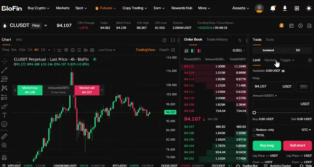
🔍 Agrandir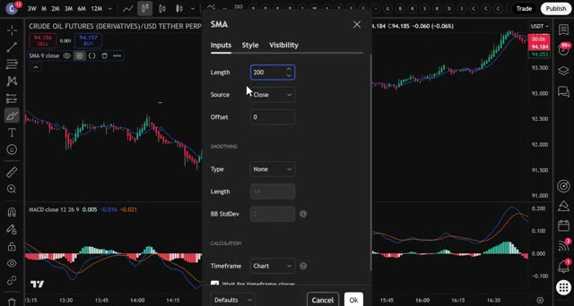
🔍 AgrandirBlofen ne requiert pas de vérification KYC obligatoire pour le trading de base, ce qui signifie que vous pouvez commencer à trader immédiatement. De plus, les nouveaux utilisateurs peuvent gagner jusqu'à 5 000 USDT grâce à des bonus sur les dépôts et le volume de trading. Maintenant, si vous voulez une alternative avec encore plus de paires de trading et la possibilité de basculer entre les fonctionnalités d'un échange centralisé et le trading de perpetuals décentralisés, vous pouvez utiliser Mexi.
Interface & Outils : Navigateur web, site d'avis Crypto Vanguards et plateforme d'échange de cryptomonnaies Blofin (interface de trading Futures).
Contenu textuel & Code : Articles sur les limites de retrait Blofin sans KYC, programme de récompenses "5,000 USDT Deposit Blast-Off Rewards", paires de trading USDT-M (BTCUSDT à 86,802.9), carnet d'ordres en temps réel.
Action / Démonstration : Navigation à travers les pages d'information et les programmes de bonus de Blofin, présentation de l'interface de trading crypto.
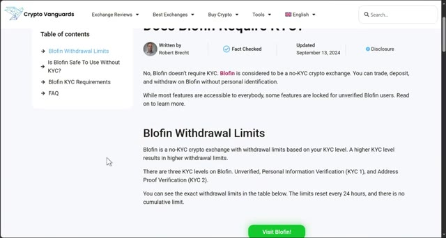
🔍 Agrandir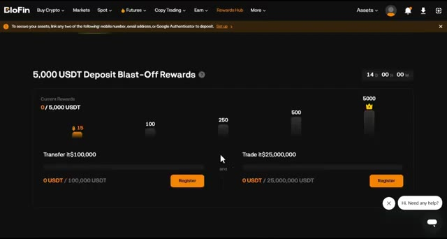
🔍 Agrandir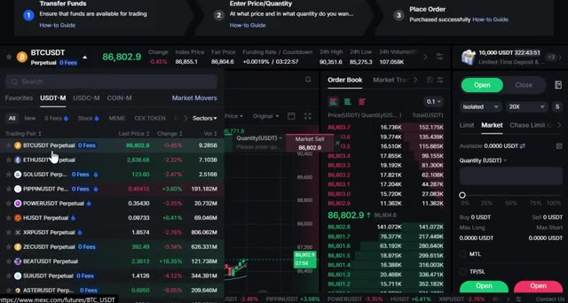
🔍 AgrandirIls proposent jusqu'à 10 000 USDT de bonus pour les nouveaux utilisateurs en ce moment. Les deux platefromes fonctionnent parfaitement pour cette stratégie, alors choisissez celle qui correspond le mieux à vos besoins. Pour vous inscrire sur Blofen, cliquez sur le premier lien dans la description. Vous serez redirigé vers la page d'inscription où il vous suffit d'entrer vos informations et de créer un compte. Aucune vérification KYC nécessaire. Vous pouvez commencer à trader immédiatement.
Interface & Outils : Interface web de l'échange de cryptomonnaies BloFin, graphiques de trading, page d'inscription et tableaux de bonus.
Contenu textuel & Code : Graphique BTCUSDT Perpetuel (unité de temps 5 minutes), carnets d'ordres (order book), panneau d'achat/vente (Buy long / Sell short), et tableau des paliers de bonus de dépôt ($30 à $1,000).
Action / Démonstration : Présentation de la plateforme de trading BloFin et de son interface, puis affichage de la page d'inscription et des bonus pour les nouveaux utilisateurs.
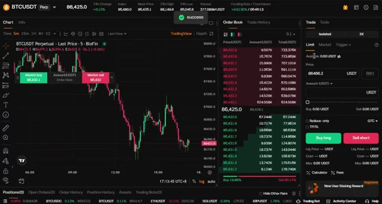
🔍 Agrandir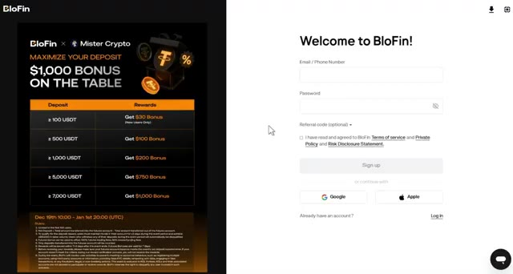
🔍 AgrandirSi vous préférez Mexi, utilisez le deuxième lien ci-dessous. Vous devrez effectuer une vérification KYC rapide sur Mexi, mais c'est rapide et sécurisé. Personnellement, j'ai des comptes sur les deux plateformes selon ce que je trade. L'étape numéro deux consiste à déposer des fonds. Laissez-moi vous montrer comment faire cela rapidement avant que nous ne plongeons dans la stratégie.
Interface & Outils : Interfaces web des plateformes d'échange de cryptomonnaies MEXC et BloFin.
Contenu textuel & Code : Formulaires d'inscription, tableaux de bonus de dépôt (ex: 30 $ à 1 000 $ de bonus selon le montant déposé de 100 à 7 000 USDT) et liens de parrainage.
Action / Démonstration : Navigation et présentation des interfaces d'inscription et des bonus sur les plateformes BloFin et MEXC.
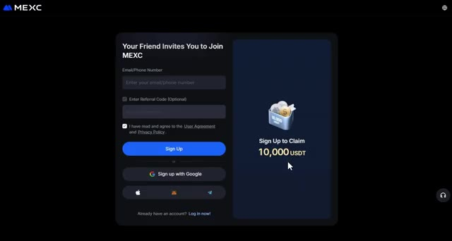
🔍 Agrandir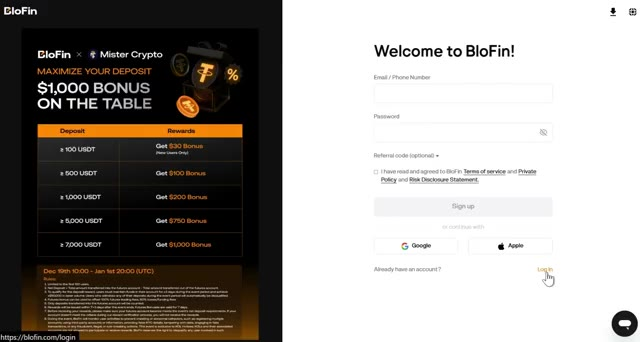
🔍 AgrandirUne fois que vous êtes connecté à votre plateforme, cliquez sur Actifs en haut à droite, puis choisissez Vue d'ensemble. Une fois sur la page Vue d'ensemble, cliquez sur Dépôt. Choisissez la crypto-monnaie que vous souhaitez déposer. Je recommande l'USDT et sélectionnez le réseau de blockchain correct. Assurez-vous de choisir le bon réseau pour éviter de perdre vos fonds. Confirmez les détails, puis scannez le code QR ou copiez l'adresse de dépôt pour transférer vos fonds depuis votre portefeuille ou un autre échange.
Interface & Outils : Blofin (plateforme d'échange crypto)
Contenu textuel & Code : Solde total (Total Equity) à 0.00 USDT, sections Funding, Spot, Futures à 0.00 USDT, et boutons d'action (Deposit, Buy Crypto, Withdraw, Transfer).
Action / Démonstration : Navigation vers la page d'aperçu des actifs du compte et clic sur le bouton de dépôt.
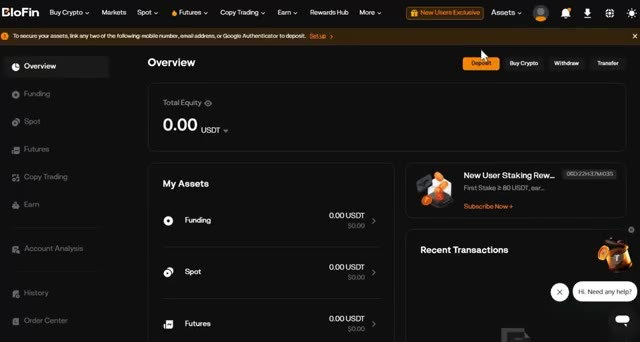
🔍 AgrandirSi vous souhaitez déposer en utilisant de la monnaie fiat, cherchez l'option Acheter des cryptos en haut du menu, puis sélectionnez Achat rapide. Choisissez votre devise, entrez le montant, sélectionnez votre mode de paiement, et cliquez sur Continuer. Une fois vos fonds déposés, il est temps d'ouvrir une position. La troisième étape consiste à ouvrir votre première position.
Interface & Outils : Interface web de l'échange de cryptomonnaies Blofin.
Contenu textuel & Code : Menus de dépôt de monnaie fiat, options de paiement par carte bancaire, SEPA, Apple Pay et Google Pay, et taux de change pour l'achat d'USDT.
Action / Démonstration : Navigation dans les menus de la plateforme pour sélectionner le mode de dépôt de fonds fiat.
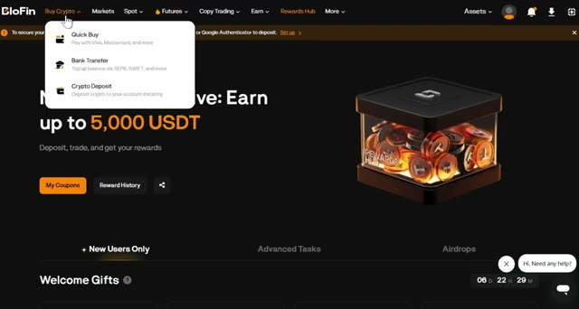
🔍 Agrandir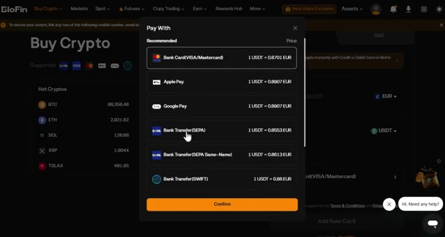
🔍 AgrandirSurvolez "Futures" dans le menu supérieur, puis sélectionnez "Futures USDT-M". Cela vous amènera à l'interface de trading où toute la magie opère. Choisissez l'actif que vous souhaitez trader dans le coin supérieur gauche. Puisque nous tradons du pétrole brut, choisissez CLUSDT, mais cette stratégie fonctionne aussi sur n'importe quelle paire crypto.
Interface & Outils : Plateforme d'échange BloFin (interface de trading Futures).
Contenu textuel & Code : Graphique en chandeliers 4H de BTCUSDT, carnet d'ordres (Order Book), prix du marché (74,158.0), indicateurs de volume (353,937M USDT) et panneau d'exécution (Isolated, 5X).
Action / Démonstration : Navigation et présentation de l'interface de trading des contrats futures sur la plateforme.
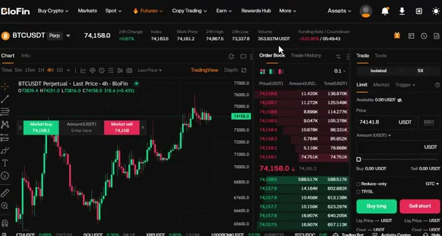
🔍 AgrandirAprès cela, sélectionnez votre type d'ordre, limite ou au marché. Pour les débutants, je recommande de commencer par des ordres au marché pour une exécution instantanée. Ensuite, choisissez votre type de levier. Vous pouvez utiliser la marge croisée ou la marge isolée. Personnellement, j'utilise toujours la marge isolée parce qu'elle limite votre risque à cette position spécifique uniquement. Si le trade tourne mal, vous perdez seulement ce que vous avez mis dans le trade. Vous pouvez utiliser un effet de levier de 20 fois pour le pétrole brut et le "blowfin", mais pour les débutants, je recommande de commencer par un effet de levier de 5 à 10 fois jusqu'à ce que vous soyez à l'aise avec la façon dont le marché évolue. Entrez les détails de votre trade,
Interface & Outils : Interface de l'échange de cryptomonnaies Blofin (section Futures).
Contenu textuel & Code : Paire CLUSDT Perpetual, types d'ordres (Limit, Market), options de levier et de marge (Cross vs Isolated).
Action / Démonstration : Sélection du type d'ordre au marché et bascule entre les modes de marge croisée et isolée.
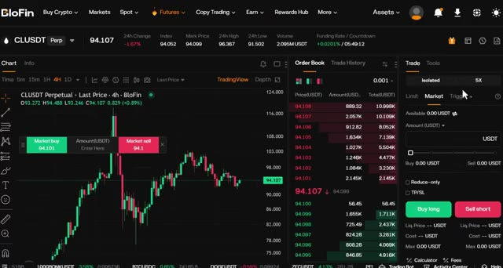
🔍 Agrandir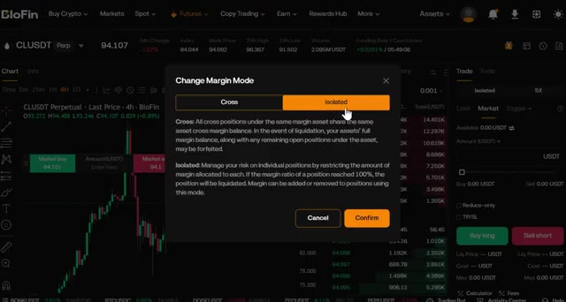
🔍 Agrandirconfirmez que tout a l'air bien puis cliquez sur acheter long ou vendre court pour ouvrir votre position. Maintenant que vous savez comment naviguer sur la plateforme et trouver le symbole du pétrole, passons à la meilleure stratégie d'une minute que vous pouvez utiliser aujourd'hui. D'abord, rendez-vous sur TradingView. J'ai un lien dans la description qui vous donne une réduction si vous voulez la version premium. Commencez par sélectionner la paire que vous voulez trader. Pour cet exemple, nous allons utiliser le pétrole brut contre USDT ou CLUSDT sur l'échange Blofen. Mais cette stratégie fonctionne sur n'importe quelle paire crypto, alors n'hésitez pas à utiliser ce que vous voulez
Interface & Outils : Blofin, TradingView (interface de trading et recherche de symboles)
Contenu textuel & Code : Graphique de prix CLUSDT Perpetual en unité 4 heures, carnet d'ordres (Order Book), panneau d'exécution des ordres (Market, Isolated, 5x, boutons Buy long / Sell short), et menu contextuel de recherche de symboles avec les actifs correspondants (Crude Oil Futures, etc.).
Action / Démonstration : Navigation sur la plateforme, visualisation du graphique de prix, utilisation du carnet d'ordres et recherche d'un symbole financier (pétrole / CLUSDT).
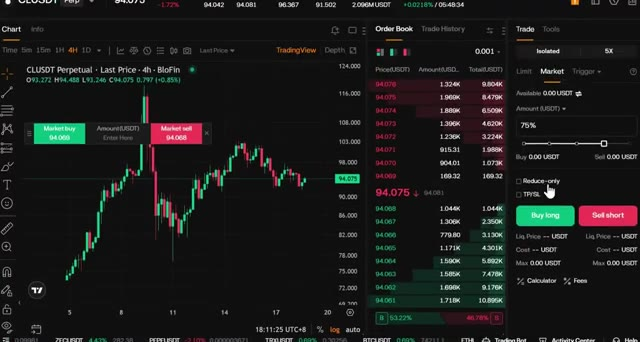
🔍 Agrandir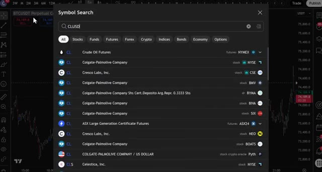
🔍 Agrandiravec lequel vous êtes le plus à l'aise. Ensuite, cliquez sur le sélecteur d'unité de temps et choisissez l'unité d'une minute. C'est une stratégie de scalping, donc nous travaillons rapidement et avec précision. Maintenant, voici la première erreur que la plupart des gens commettent. Ils utilisent des bougies normales. À la place, cliquez sur le type de bougie et passez aux bougies Heiken Ashi. Celles-ci sont différentes des bougies normales car au lieu de vous montrer une seule bougie par période, elles prennent également la moyenne des bougies précédentes, ce qui vous donne une représentation beaucoup plus fluide et nette des mouvements de prix.
Interface & Outils : Graphique TradingView sur l'exchange BloFin.
Contenu textuel & Code : Paire CLUSDT.P (Crude Oil Futures), unité de temps 1m sélectionnée, affichage des prix du contrat perpétuel avec des signaux de trading sous forme de points bleus.
Action / Démonstration : Sélection de l'unité de temps 1 minute pour une stratégie de scalping rapide.
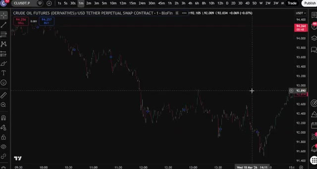
🔍 AgrandirCe que vous observez essentiellement, c'est la direction du momentum, et non pas seulement le prix brut. Et cela rend bien plus facile de repérer quand une vague commence ou se termine. Vous pouvez le voir clairement sur le graphique. Le prix évolue par vagues : haut, bas, haut, bas. Notre travail est simplement de capturer ces vagues au bon moment. Maintenant, cliquez sur les indicateurs et recherchez MACD, pour moving average convergence divergence (moyenne mobile de convergence divergence).
Interface & Outils : Graphique de trading (interface type TradingView intégrée sur BloFin).
Contenu textuel & Code : Paire CRUDE OIL FUTURES (DERIVATIVES)/USD TETHER PERPETUAL SWAP CONTRACT, échelle de temps en minutes, chandeliers verts (haussiers) et rouges (baissiers).
Action / Démonstration : Observation des mouvements de prix en vagues (hauts et bas) pour analyser la structure du marché.
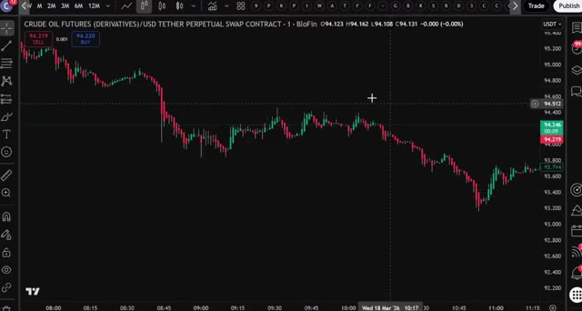
🔍 AgrandirSélectionnez-le et ajoutez-le à votre graphique. Ensuite, cliquez à nouveau sur les indicateurs, recherchez la moyenne mobile, et ajoutez celle-ci également. Cliquez sur les paramètres de la moyenne mobile, définissez la longueur sur 200, puis allez dans le style et changez la couleur en bleu et rendez-la plus épaisse afin qu'il soit facile de la voir sur votre graphique. C'est votre moyenne mobile sur 200 périodes et c'est la ligne la plus importante sur votre graphique pour cette stratégie.
Interface & Outils : Graphique TradingView
Contenu textuel & Code : Menu "Indicators, metrics, and strategies" avec la barre de recherche contenant "MOVING AVERAGE" et les résultats associés (Moving Average Exponential, Simple Moving Average, etc.).
Action / Démonstration : Recherche et sélection d'une moyenne mobile (Moving Average) dans le menu des indicateurs.
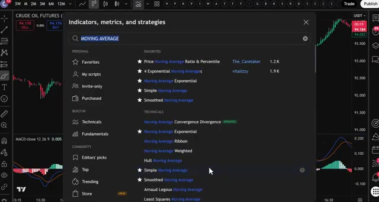
🔍 AgrandirVoici la règle et elle est simple. Si le prix est au-dessus de la moyenne mobile à 200 périodes, vous ne cherchez que des positions acheteuses. Si le prix est en dessous de la moyenne mobile à 200 périodes, vous ne cherchez que des positions vendeuses. C'est tout. Ne tradez jamais à l'encontre de cette ligne. J'ai vu tellement de traders se faire détruire parce qu'ils ont essayé de shorter une crypto qui se trouvait au-dessus de la moyenne mobile à 200 périodes ou d'acheter quelque chose qui s'échangeait en dessous.
Interface & Outils : Graphique de trading (TradingView / BloFin)
Contenu textuel & Code : SMA 200 (ligne bleue), MACD (12, 26, 9), paires Crude Oil Futures / USD Tether Perp.
Action / Démonstration : Analyse graphique de la tendance par rapport à la moyenne mobile à 200 périodes et mise en évidence de zones clés avec des cercles tracés à main levée.
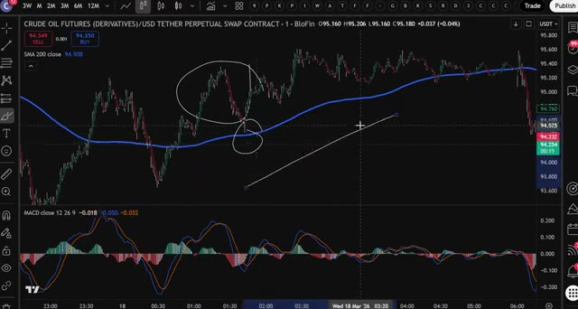
🔍 Agrandirne le faites pas. La moyenne mobile à 200 périodes vous indique la tendance générale. Tradez toujours avec elle, jamais contre elle. C'est là qu'intervient le MACD, et c'est votre véritable déclencheur d'entrée. Le MACD est un indicateur de momentum. Il vous indique quand le momentum change, et c'est exactement à ce moment-là que vous voulez entrer en position. Voici ce que vous devez rechercher. Pour une position short, le prix doit être en dessous de la moyenne mobile à 200 périodes. Ensuite, surveillez le MACD. Lorsque vous voyez le momentum passer du vert au rouge, ce signal rouge est votre déclencheur. Les bougies Heiken Ashi vont également commencer à devenir rouges et à montrer
Interface & Outils : Interface de type TradingView / BloFin affichant un graphique de contrats perpétuels de pétrole brut (CRUDE OIL FUTURES).
Contenu textuel & Code : SMA 200 (ligne bleue sur le prix), MACD (12, 26, 9) avec histogramme, lignes de signal et de MACD, et une zone encerclée sur le MACD illustrant un changement de momentum.
Action / Démonstration : Analyse technique du graphique illustrant l'utilisation conjointe de la moyenne mobile à 200 périodes pour la tendance et du MACD comme déclencheur d'entrée basé sur le momentum.
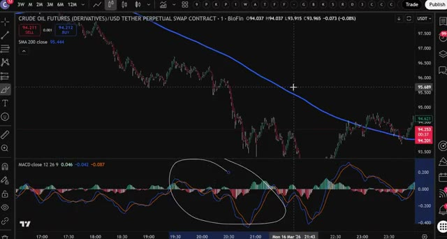
🔍 Agrandirl'élan est en train de changer de direction. C'est votre point d'entrée. Ouvrez votre position short. Pour une position long, le prix doit donc être au dessus de la moyenne mobile à 200 périodes. Surveillez le MACD pour un croisement du rouge au vert. Lorsque vous voyez ce signal vert et que les bougies Heiken Ashi commencent à devenir vertes, c'est votre point d'entrée. Ouvrez votre position long. C'est une confirmation en deux étapes à chaque fois. La moyenne mobile à 200 périodes vous indique la direction. Le MACD vous indique le timing. Les deux doivent s'aligner avant que vous n'entriez en position. Maintenant écoutez, le scalping signifie que vous allez prendre beaucoup de trades et que vous n'allez pas tous les gagner. Personne ne le fait. Donc la façon dont vous vous protégez
Interface & Outils : Graphique TradingView intégré sur la plateforme Blofin
Contenu textuel & Code : Paire CRUDE OIL FUTURES (DERIVATIVES)/USD TETHER PERPETUAL SWAP CONTRACT, moyenne mobile simple (SMA 200 close à 99.828), et indicateur MACD (12, 26, 9) affichant des histogrammes de momentum verts et rouges ainsi que des lignes de signal.
Action / Démonstration : Analyse technique du graphique des prix par rapport à la moyenne mobile à 200 périodes et observation du croisement du MACD pour identifier un point d'entrée de position.
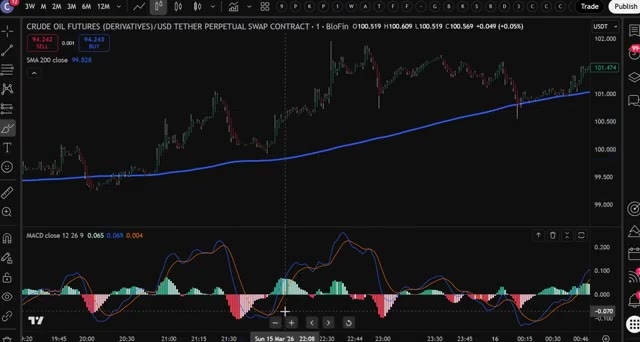
🔍 Agrandirc'est avec une bonne gestion des risques. Pour cette stratégie, définissez votre stop loss à 1 % et votre take profit à 3 %. Cela vous donne un ratio risque/rendement de 1 pour 3, ce qui signifie que même si vous ne gagnez que la moitié de vos trades, vous restez globalement rentable. Et voilà la stratégie complète sur une minute pour le pétrole brut. Simple, claire et extrêmement efficace lorsque vous suivez les règles. Pour commencer, cliquez sur le premier lien dans la description pour vous inscrire sur Bluffin et réclamer vos bonus. Si Bluffin n'est pas disponible dans votre pays, utilisez le deuxième lien pour Mexi. Les deux plateformes fonctionnent parfaitement pour cette stratégie,
Interface & Outils : Interface TradingView intégrée sur BloFin montrant un graphique en chandeliers et l'indicateur MACD.
Contenu textuel & Code : Outil de position Long avec un Stop Loss de 1% et un Target de 3%, affichant clairement "Risk/reward ratio: 3".
Action / Démonstration : Visualisation d'un trade configuré avec gestion des risques et rapport risque/rendement de 1:3 sur le graphique.
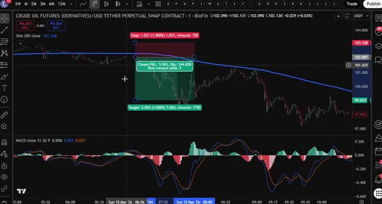
🔍 Agrandiret aucun des deux n'exige de KYC obligatoire pour commencer. Et si vous voulez plus de détails sur le fonctionnement des plateformes Bluffin et Mexi, regardez la vidéo qui s'affiche à l'écran en ce moment même. Je vous retrouve dans la prochaine.
Interface & Outils : Navigateur web (Crypto Vanguards) et interface de l'échange de cryptomonnaies Blofin.
Contenu textuel & Code : Articles sur les exigences KYC, graphiques de prix en direct, carnet d'ordres et panneau de passage d'ordres (Futures).
Action / Démonstration : Navigation sur un site de revue de crypto-monnaies et consultation de l'interface de trading de Blofin.
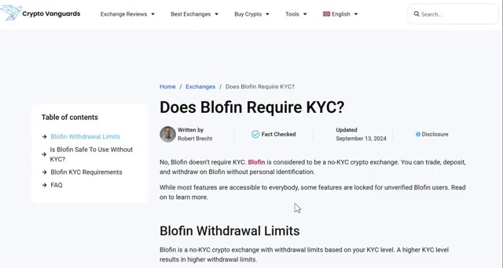
🔍 Agrandir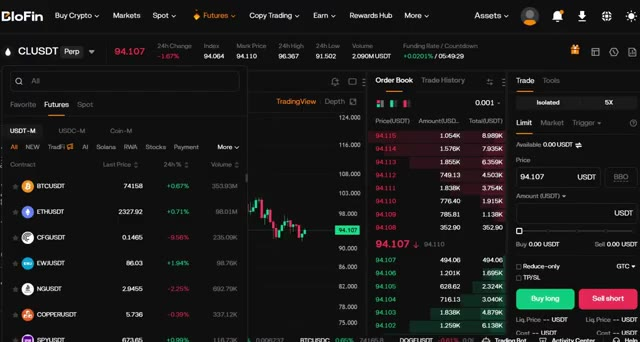
🔍 Agrandir